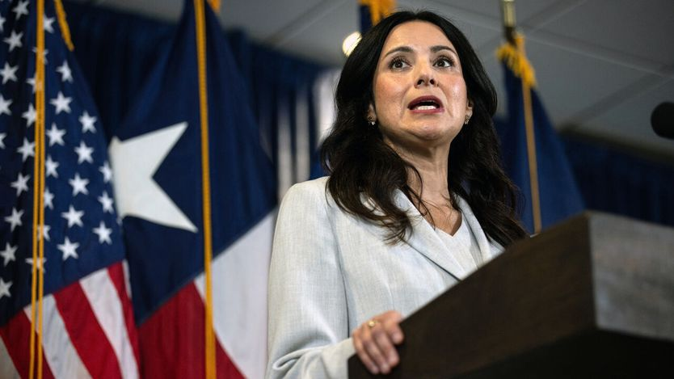

民主党真正的战场在州一级，但翻盘没那么容易
Democrats will struggle with a state-level revolution
推翻共和党的政策，比看上去要难得多

- 中期选举让民主党新增六个「三连胜」州——州议会两院加州长全部拿下，总数达 22 个。超过一半的美国人将住在民主党完全掌控的州，超过三分之二的人所在州有民主党州长。
- 最有杀伤力的抓手是选举人团：18 个州已加入《全国普选票州际协定》，承诺把选举人票投给全国普选票胜者。若亚利桑那、密歇根、宾州、威斯康星加入，票数过半即生效，总统选举的规则可能被改写。
- 但他们竞选时明确反对的共和党政策，反而最难推翻。教育券在艾奥瓦、得州的议会仍由共和党控制至少一院；扩大医疗补助要自掏一成费用并承担 2027 年起的工作要求审核成本。
- 真正的硬约束是钱：多数州财政尚可，但收入增速在放缓，联邦对医疗补助和食品援助的削减同时压来。得州承诺的每户 1500 美元支票要花约 170 亿美元，吃掉应急基金一半以上。
十年前，唐纳德·特朗普拿到的普选票比对手少了近 300 万张，却靠选举人团当上了总统。把他送进白宫的州里有亚利桑那、密歇根、宾夕法尼亚和威斯康星。在刚结束的中期选举中，民主党在这四州全部拿下「三连胜」——州议会两院加州长职位都归他们。他们有机会把选举人团制度整个掀翻。已有 18 个州加入《全国普选票州际协定》，承诺把本州选举人票投给全国普选票的胜者。该协定只有在加入州的选举人票合计过半之后才生效。如果亚利桑那、密歇根、宾州和威斯康星加入，门槛就会被跨过，总统选举的玩法可能彻底改变。
民主党拿下众议院和参议院多数，想改的事情很多。但在华盛顿，他们仍会撞上总统否决权和「冗长辩论」——参议院少数派用无限发言拖死法案的程序。真正能施展的地方在州一级。中期选举产生了六个新的民主党「三连胜」州，总数达到 22 个。不久之后，超过一半的美国人将住在民主党完全掌控的州；超过三分之二的人所住的 30 个州会有民主党州长。州权意味着对教育、医疗等一切事务的巨大影响力。民主党会怎么用？
各州的共同优先事项正在浮现。新当选的民主党州长承诺限制数据中心建设——选民对这件事的不满已经表达得很清楚。在内华达，民主党可能废除该州的「工作权」法（right-to-work，禁止工会强制工人缴纳会费）；威斯康星可能放松对公共部门工会的限制。多个州把提高最低工资列入议程。亚利桑那的民主党可能寻求废除堕胎限制。在得克萨斯、佐治亚等地，新当选的民主党总检察长在執行和捍卫堕胎禁令时，大概不会那么卖力。
但即便是他们竞选时明确反对的共和党政策，扭转起来也很困难。以「教育券」为例：政府给家长一笔钱，让他们拿去付私立学校学费。在艾奥瓦和得州，这类计划引发分裂，尤其是在农村共和党人当中——他们担心，在几乎没有私立学校可选的社区，公立学校的未来会被掏空。艾奥瓦新当选的民主党州长罗布·桑德称本州计划是「从公立学校抽走数亿美元」。得州新当选的民主党州长吉娜·伊诺霍萨（Gina Hinojosa，见图）在胜选演说中表示，她会「不知疲倦地修补得州教育券骗局造成的伤害」。
然而废除这些计划并不容易。为了让计划在州议会过关，艾奥瓦和得州的离任共和党州长金·雷诺兹、格雷格·阿博特曾帮助在党内初选中击败农村共和党对手。如今桑德和伊诺霍萨必须与那些取而代之的议员共事。艾奥瓦的州众议院和参议院都在共和党手里；得州的参议院也在共和党手里。更温和的改革或许是最可能的结果。即便在民主党拿下三连胜的亚利桑那，教育券计划看来也会存活下来——连任的民主党州长凯蒂·霍布斯谈的是遏制「欺诈、浪费和滥用」，而不是废掉这套制度。
医疗是民主党做出重大承诺的另一个领域，但他们的雄心可能受挫。在佐治亚、堪萨斯、得州和威斯康星，新当选的民主党州长誓言通过《平价医疗法案》（ACA，俗称奥巴马医改）扩大联邦医疗补助（Medicaid，面向穷人的医保）。按该法，新纳入的成年人有九成费用由联邦政府承担——这一财政激励自 2014 年以来已促使 40 个州和华盛顿特区扩大该计划。
难点在于，在多数尚未扩大补助的州，共和党至少还控制着一个议会院。而特朗普去年通过的「一大漂亮法案」让扩大补助变得不那么划算：它取消了给尚未扩州的州的一笔额外财政激励，并从 2027 年起强制各州对受助人设置工作要求。这意味着要为新员工和技术投入数千万美元。在州官员警告来不及准备之后，联邦政府最近给了各州一个可选的六个月宽限期。
这反映出民主党面临的更大挑战。多数州的财政状况还算稳健，近年得益于联邦拨款和税收激增。但收入增长正在放缓，同时联邦对医疗补助、食品援助等项目的削减正给预算增加压力。这会让民主党更难兑现那些旨在压低生活成本的承诺，比如育儿补贴、房产税减免、下调销售税和汽油税。伊诺霍萨承诺给得州每户家庭寄一张 1500 美元的一次性支票，该计划将耗费约 170 亿美元，吞掉该州应急基金的一半以上。
这一切的政治后果让党内一些人担忧。中期选举表达出一个愤怒、渴望剧变的选民群体，民主党用慷慨的承诺和雄心勃勃的议程接住了这股能量。可选民会容忍执政必然带来的取舍与妥协吗？废除教育券、扩大医疗补助，或许和改变美国总统的选举方式一样难，甚至更难。对民主党来说，赢得权力看起来是最难的部分；真正把权力用起来，可能是更大的考验。